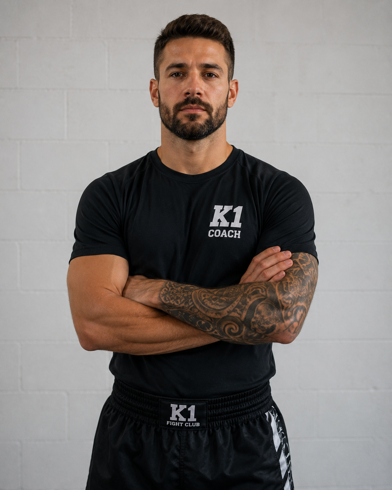

Nagy Bence
Nagy Bence több mint 18 éve foglalkozik K1-gyel és kick-boxszal. Versenyzőként többszörös országos bajnoki helyezést ért el, később pedig az utánpótlás-nevelés felé fordult. Ő vezeti a kezdő és középhaladó csoportokat, ahol nagy hangsúlyt fektet az alapállásra, a lábmunkára, a v édekezésre és az egyszerű, mégis hatékony kombinációkra. Edzései fokozatosan épülnek fel, ezért azok számára is ideálisak, akik most ismerkednek az állóharccal. Bence célja, hogy minden sportoló biztos technikai alapokat és valódi önbizalmat szerezzen.